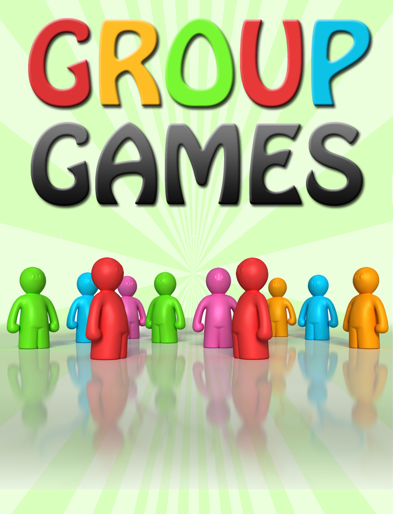
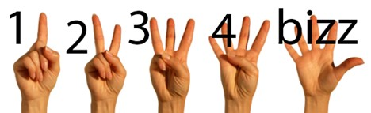

Welcome to my games site!
As a teacher I always liked to have a handful of games and icebreakers ready to go for my advisory or any other group of students I found myself working with.
Here are a handul of the games I kept going back to. Use the links on the left side. Note that the last one is a little math puzzle I created just for this site. Enjoy!
Bizz Buzz
Before I'd ever heard of Fizz buzz, there was Bizz Buzz. Perhaps it's the kind of thing that has different names in diff erent parts of the country, like Hardee's. Long before I would learn of the magic of modulo division, I played a counting game that my we called Bizz Buzz.
The rules are simple, and likely familiar to anyone reading this, though the version I was taught has some key differences to the program you might have been asked to implement on Leetcode. Players form a circle, and start counting from 1. Anytime a player reaches a number that is divisible by 5, they replace it with "Bizz". In the event of numbers divisible by 7 or any number containing a 7, such as 17 they replace it with "Buzz". Numbers that satisfy both conditions are a "Bizz Buzz."
If anyone makes a mistake or takes to long to answer, they start over as 1. This works as an icebreaker or an group warm-up before a larger circle activity or meeting. See if you can make it to 50 in less than a minute!
City Guessr
A non-affiliated spinoff of the popular geography game Geuguessr, City Guessr gives you video and audio of a person walking the streets of a city somewhere on earth. You are tasked with figuring out which city. See how close you can get!
This or That
No one expects to have to pick between hoodies or cheese, but you'll learn a surprising amount about your group and sometimes yourself in the process. Another great group icebreaker or warm-up, this or that questions will find you and your group taking surprising stands.
Several hundred prompts to get you startedTrivia
An oldie, but a goodie, getting the group guessing at random questions is an effective way to warm up for a discussion or circle activity.
Our go-to trivia siteWhat's Yours Like?
Go around a circle describing something or yours (your hair, backpack, or favorite song) while one person who is unaware of the prompt has to guess what you're all describing.
The instructions from the retail version of this game are included below, and it is easy enough to make your own prompts and go from there. That said, if you like the game it's worth it to support the creators and buy the real deal.
Full instructions